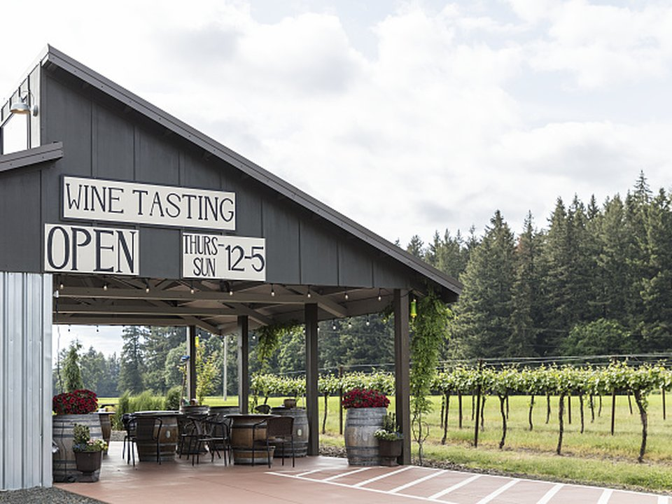

Newberg · Luxury resort
The Allison Inn & Spa
Oregon wine country’s luxury resort, with JORY restaurant and a spa.
Official details for The Allison Inn & SpaPinot Noir and the Spruce Goose.
The northern Willamette Valley is one of the world’s great Pinot Noir regions, with hundreds of small wineries in rolling hills southwest of Portland. Land at McMinnville, walk next door to the North American Aerospace Museum (formerly the Evergreen Aviation & Space Museum) to see Howard Hughes’s Spruce Goose, stay at the Allison Inn or downtown at the Atticus, taste in the Dundee Hills with a driver and eat on McMinnville’s Third Street.

Time illustration: direct distance at 150 KTAS plus 15 minutes for departure and arrival, matching the discovery page. Use ForeFlight for your actual flight plan.
KMMV, McMinnville Municipal, is a non-towered field at 163 feet with a 5,420-foot runway. The North American Aerospace Museum, home of the Spruce Goose, is across the highway.
McMinnville Municipal Airport, McMinnville, OR
Confirm fuel and FBO services before you go; listings for the field’s FBO vary. Winter brings low ceilings and drizzle. Arrange a car or wine driver. No live fuel price is shown.
Pacific Northwest weather: low ceilings, drizzle and mountain obscuration much of the year from October to May; clear, dry summers with morning marine stratus on the coast; icing in winter clouds; and the Cascades between the coast and the interior. About 2130 nm from Myrtle Beach: two long days each way with several fuel stops. Plan a week, or overnight on the way out and back.
Rates and availability need travel dates. Harvest and Thanksgiving weekend book early.
Oregon wine country’s luxury resort, with JORY restaurant and a spa.
Official details for The Allison Inn & SpaA design-forward hotel on Third Street.
Official details for The Atticus HotelPrices and availability for your dates, through our partner Stay22. This is an affiliate link: we may earn a commission at no cost to you. The picks above are never paid.
Reserve weekend dinners.
A Dayton restaurant famous for wild mushrooms and an Oregon wine list.
Official details for The Joel Palmer HouseA McMinnville institution since 1977.
Official details for Nick’s Italian CafeMost wineries prefer reservations.
The Spruce Goose, an SR-71 and hundreds of aircraft and spacecraft (formerly Evergreen).
North American Aerospace MuseumPinot Noir tasting rooms with valley views.
Willamette Valley Wineries AssociationThis prototype links to the local visitor site. It does not yet match events to your travel dates.
A famous Pinot Noir weekend in McMinnville.
Visit McMinnville for International Pinot Noir CelebrationWineries open their doors.
Willamette Valley Wineries for Wine Country ThanksgivingCrush season in the hills.
Willamette Valley Wineries for HarvestCheck the local calendar when choosing a weekend, and confirm dates and tickets with the organizer.
A sample wine-country weekend. This is a two-day flight each way; plan a week. No bookings or availability confirmed.
Land at KMMV mid-morning.
The Spruce Goose next door.
Two Dundee Hills wineries, then back to the airport.
Land at KMMV, subject to weather and your actual flight plan.
The Spruce Goose next door.
Dinner at Nick’s.
Dundee Hills wineries with a driver.
A rest at the spa.
Dinner at the Joel Palmer House.
Third Street coffee and shops.
Return the car and allow time at the airport.
Pacific Northwest ceilings can drop quickly; leave with a margin.
Wineries with a driver.
The spa at the Allison.
Dinner at the Joel Palmer House.
These details make the difference between an appealing list and a usable getaway.
Lodging and a driver first.
About 2,130 nm from Myrtle Beach: two long days each way.
Call ahead to confirm fuel and services.
May to October.
Picks and links reviewed by WingAway Weekends. Hours, prices, menus and availability change often, so confirm directly with each place before booking. Spotted something out of date, or have a favorite we missed? Email us at hello@wingawayweekends.com.
WingAway Weekends helps you discover the destination. Use ForeFlight and current official aviation information for route, performance, weather, NOTAMs and preflight decisions. Flight planning and PIC responsibility stay with the pilot.
One fly-in weekend, a Fly to Lunch pick and the newest guides, about once a month.
Free. Unsubscribe anytime.